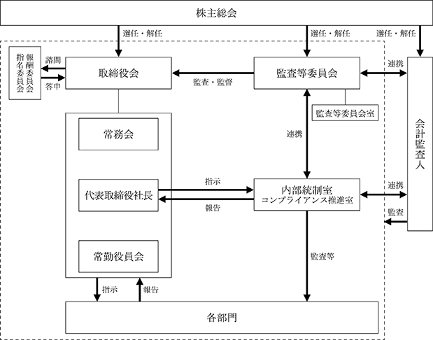
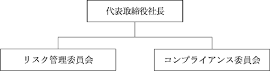

該当事項はありません。
該当事項はありません。
③【その他の新株予約権等の状況】
該当事項はありません。
該当事項はありません。
(注) １ 譲渡制限付株式報酬としての新株式発行による増加であります。
発行価格 2,805円
資本組入額 1,500円
割当先 取締役５名
２ 譲渡制限付株式報酬としての新株式発行による増加であります。
発行価格 2,825円
資本組入額 1,500円
割当先 取締役５名
３ 譲渡制限付株式報酬としての新株式発行による増加であります。
発行価格 3,600円
資本組入額 1,900円
割当先 取締役５名
４ 資本金及び資本準備金の減少は欠損填補によるものであります。
2023年11月30日現在
(注) 自己株式546株は、「個人その他」に5単元、「単元未満株式の状況」に46株含まれております。
2023年11月30日現在
(注) 所有株式数は百株未満を切り捨てて表示しております。
2023年11月30日現在
(注) 「単元未満株式」の中には当社所有の自己株式46株が含まれております。
2023年11月30日現在
【株式の種類等】
会社法第155条第７号に該当する普通株式の取得
該当事項はありません。
該当事項はありません。
（注）当期間における取得自己株式には、2024年２月１日からこの有価証券報告書提出日までの単元未満株式の買取による株式数は含まれておりません。
（注）当期間における保有自己株式数には、2024年２月１日からこの有価証券報告書提出日までの単元未満株式の買取による株式数は含まれておりません。
当社は、株主の皆様に対する利益還元を経営の最重要課題のひとつと位置付けたうえで、財務体質の強化と積極的な事業展開に必要な内部留保の充実を勘案し、長期にわたる安定的配当政策を基本方針としています。
当社は、定款に取締役会決議による剰余金の配当等を可能とする規定を設けておりますが、当事業年度において は、営業利益が283,653千円、当期純利益が393,364千円を計上したため、上記方針のもと復配に向けた環境が整ったものと判断し、期末配当金として１株当たり25円とする決議をさせていただきました。
なお、内部留保資金につきましては、新事業の店舗新設及び将来の事業展開に必要な投資資金に充てるとともに、より一層の財務基盤の強化及び今後の事業拡大等に有効投資してまいりたいと存じます。
当社では、コーポレート・ガバナンスを経営上の重要課題と認識し、法令遵守はもとより、経営の透明性と公平性の確保及び効率的な経営を行い、社会的責任を果たすとともに、株主、顧客、取引先、債権者、従業員、さらには当社設立の歴史的経緯を踏まえ横浜市及び横浜市民等のステークホルダーとの間で、良き協力と円滑な関係を保ちつつ、健全な企業経営の維持、向上を目的としております。
（企業統治の体制の概要）
当社は、監査等委員会設置会社であり、取締役会及び監査等委員会はそれぞれ過半数を社外取締役で構成しております。当社の各機関等の概要は以下のとおりであります。
a.取締役会
取締役会は、取締役（監査等委員である取締役を除く。）10名、監査等委員である取締役５名の合計15名で構成されております。このうち９名は独立社外取締役であり、取締役会における独立社外取締役の比率を高め、取締役会の監督機能の強化を図っております。取締役会は、定例の取締役会のほか、必要に応じて臨時取締役会を開催し、法令で定められた事項や経営に関する重要事項を決定いたします。2023年度の主な付議および報告は、決算・財務関連、ガバナンス、コンプライアンス関連などであります。
なお、2023年度においては取締役会を７回開催し、個々の取締役の出席状況は以下のとおりであります。
代表取締役会長兼社長 原 信造：７回 常務取締役 岸 晴記：７回
常務取締役 青木 宏一郎：７回 取締役 上野 孝：７回 取締役 岡崎 真雄：４回
取締役 川本 守彦：７回 取締役 勝 治雄：７回 取締役 関口 真司：７回
取締役 山本 修二：７回 取締役 山﨑 明：５回
取締役（監査等委員長） 奥津 勉：７回 取締役（監査等委員） 野村 弘光：７回
取締役（監査等委員） 佐々木 寛志：７回 取締役（監査等委員） 大久保 千行：７回
取締役（監査等委員） 宮田 久嗣：５回
また、取締役 山﨑 明および取締役（監査等委員） 宮田 久嗣は、2023年２月22日就任以降、当事業年度に開催された取締役会５回の全てに出席しております。
b.監査等委員会
監査等委員会は、監査等委員である取締役５名（うち、社外取締役４名）で構成されております。監査等委員長は、重要な会議に出席し、必要に応じて、他の監査等委員と情報を共有することとし、監査等委員会として取締役の職務執行を実効的かつ効率的に監査できる体制を構築しております。また、監査等委員会は、会計監査人より、定期的に監査結果の報告、その他重要事項の報告を受けることとしております。監査等委員会は、定例の監査等委員会のほか、必要に応じて臨時監査等委員会を開催し、法令で定められた事項や取締役の職務執行の監査のために必要な事項を協議、決定いたします。
なお、2023年度においては監査等委員会を７回開催し、個々の監査等委員の出席状況は「（3）監査の状況」をご参照ください。
c.指名委員会及び報酬委員会
指名委員会及び報酬委員会は取締役会の諮問機関として設置しております。各委員会の構成員の過半数は社外取締役とし、委員長は社外取締役とすることにより、各委員会の独立性を担保しております。指名委員会では、取締役会の構成、取締役候補者の選定理由等について、報酬委員会では、当該事業年度に係る報酬制度及び報酬水準等について審議を行い、社外取締役である委員から助言、提言を得ることとしております。
なお、2023年度においては指名委員会及び報酬委員会を３回開催し、個々の取締役の出席状況は以下のとおりであります。
取締役（指名委員会及び報酬委員会委員長） 上野 孝：３回
取締役（指名委員会及び報酬委員会委員） 岡崎 真雄：１回
取締役（指名委員会及び報酬委員会委員） 川本 守彦：３回
取締役（指名委員会及び報酬委員会委員） 勝 治雄：３回
取締役（指名委員会及び報酬委員会委員） 山﨑 明：１回
代表取締役会長兼社長（指名委員会及び報酬委員会委員） 原 信造：３回
また、取締役（指名委員会及び報酬委員会委員） 山﨑 明は、2023年２月22日就任以降、当事業年度に開催された報酬委員会の全てに出席しております。
d.常務会
常務会は常勤取締役、執行役員、監査等委員長により原則として週１回開催し、常務会規程に基づき取締役会への提案事項を決定し、重要な経営方針等を協議しております。
e.常勤役員会
常勤役員会は常勤取締役及び執行役員により原則として週１回開催し、各部門より業績のレビューと改善策を報告させ、具体的な対策を検討することとしております。
2024年２月22日時点のコーポレートガバナンス体制の構成員は以下のとおりです。（◎は議長または委員長）
2024年２月22日時点のコーポレートガバナンスの体制図は以下のとおりです。

（当該体制を選択する理由）
当社は、設立以来、横浜市及び横浜市民との密接な協力関係を維持しており、今後、創業100年、200年を見据えた中長期の企業価値の向上及びホテル事業の発展創造のためには、株主並びに横浜市及び横浜市民を初めとする国内外のステークホルダーの期待により的確に応えうるガバナンス体制の構築が必要と考えております。そのため、取締役会の議決権を有する社外取締役等で構成される監査等委員会が、業務執行の適法性、妥当性の監査・監督を担う体制を選択することにより、各ステークホルダーの立場を踏まえた、公正かつ透明性の高い経営の実現を目指してまいります。
（役員等賠償責任保険契約の内容の概要）
当社は、保険会社との間で会社法第430条の３第１項に規定する役員等賠償責任保険契約を締結しております。当該保険契約の被保険者の範囲は、当社の全ての取締役、会計監査人、執行役員及びその他会社法上の重要な使用人であり、保険料は当社が全額負担し、被保険者の実質的な保険料負担はありません。当該保険契約では、被保険者がその職務の執行に関し責任を負うこと、又は当該責任の追及に係る請求を受けることによって生ずることのある損害について補填することとしており、１年毎に契約更新をしております。ただし、被保険者の職務の執行の適正性が損なわれないようにするため、法令違反の行為であることを認識して行った行為に起因して生じた損害は補填の対象外であるなど、一定の免責事由があります。
（内部統制システムの整備の状況）
取締役の職務の執行が法令及び定款に適合することを確保するための体制その他会社の業務の適正を確保するための体制についての決定内容の概要は以下のとおりであります。
（ａ）取締役及び使用人の職務の執行が法令及び定款に適合することを確保するための体制
・取締役会規則等諸規程を制定し、職務分掌による権限に基づいて業務運営を行っております。
・コンプライアンス規程によりコンプライアンスの基本事項を定め、その運用について、コンプライアンス全体を統括する組織として、社長直轄のコンプライアンス委員会、コンプライアンス推進室を設置し、コンプライアンス委員会、コンプライアンス推進会議を定例開催し、各種リスク情報の共有化及び諸問題解決のための討議を行い、使用人とともに法令遵守体制の整備及び推進に努めております。
・社内における法令違反行為等に対して適切な処理を行うため、公益通報者保護法に基づいた内部通報制度規程を定め、外部専門家である弁護士を受付窓口とし、公正性、透明性を高め実効性のある内部通報制度とし、コンプライアンス経営の強化に努めております。
・内部統制室、コンプライアンス推進室による内部監査体制を構築するとともに、内部統制システムを構築し、法令及び定款の遵守の有効性について監査等委員会室を主管部署とし監査を行っております。主管部署及び監査を受けた部署は、是正、改善の必要がある時には速やかにその対策を講じております。なお、財務報告の信頼性を確保するため、財務報告に係る基本方針書を定めております。
・社会の秩序や安全を脅かす反社会的勢力とは一切の関係を持たず、全社挙げて毅然たる態度で対応します。また、ホテル利用規則にもその旨明記し、ホテル館内にも掲示するとともに、定期的に外部専門家を招き、反社会的勢力へのその対応等について社員研修を実施しております。
（ｂ）取締役の職務の執行に係る情報の保存及び管理に関する体制
・取締役の職務の執行に係る情報については、文書管理規程に基づき、その重要度に応じて保存期間及び保存方法を定め、適切に管理しております。
・所管部署は、取締役及び監査等委員会から文書閲覧を求められた際には、速やかに対応することとしております。
（ｃ）損失の危険の管理に関する規程その他の体制
・ホテルマネジメントに伴うリスクについて、リスク管理規程により、リスクに関する基本事項を定め、その運用について社長直轄のリスク管理委員会を設置しております。
・役員、管理職である使用人をリスク管理委員とした委員会を毎月定例開催し、反社会的勢力・食品安全衛生・防災・防犯・個人情報保護等のあらゆるリスクに対応することとしております。また、各リスクの発生と被害の防止、軽減を図るため適宜研修等を実施しております。
・プライバシーポリシー及び情報セキュリティ機器管理規程を定め、電子情報を含め全ての個人・顧客情報を安全に管理するための社内体制を構築しております。
・大規模災害発生時の緊急対策本部の立上げ、自衛消防活動、お客様・役員・使用人の安全への誘導等、平日・休日・夜間を想定し、緊急時対応のマニュアルを策定し定期的な訓練を実施しております。
（ｄ）取締役の職務の執行が効率的に行われることを確保するための体制
・取締役の職務については、取締役会で決定された職務分掌により、その経営方針に従い、適切かつ効率的に執行するものとし、取締役会は取締役の業務執行を監督するものとしております。
・法令・定款・諸規程に則り取締役会を定期的に開催するほか、必要に応じて随時開催します。なお、常務会を原則週１回開催し常務会規程に基づき取締役会への提案事項、重要な経営方針等を協議、決定、また、常勤役員会を原則週１回開催し、各部門より業績のレビューと改善策を報告させ、具体的な対策を検討することとしております。
・会計監査人の代表取締役からの独立性を確保するため、会計監査人の監査計画については、監査等委員会が事前に報告を受領することとしております。
（ｅ）監査等委員会がその職務を補助すべき使用人を置くことを求めた場合における当該使用人に関する事項及び当該使用人の取締役からの独立性に関する事項並びに当該使用人に対する指示の実効性の確保に関する事項
・監査等委員会の職務を補助すべき使用人として、監査等委員会室を設け、兼務の使用人を置き、当該使用人は監査等委員会の指示に従って、監査等委員の職務の補助をすることとしております。
・監査等委員会室員は、監査等委員会の監査の実施時は取締役の指揮下から監査等委員会の直接指揮下に移り監査等委員会の監査の職務を行います。
・監査等委員の職務を補助すべき使用人の人事については、担当取締役は監査等委員と意見交換を行い、監査の職務の補助をすべき使用人の職務が円滑に行われるよう、監査環境の整備に努めます。
（ｆ）取締役及び使用人が監査等委員会に報告するための体制
・取締役及び使用人は、当社の業務に与える重要な事項について監査等委員会に報告するものとし、職務の執行に関する法令違反、不正行為の事実、又は、当社に損害を及ぼす事実を知った時は、遅滞無く報告するものとします。なお、前記にかかわらず、監査等委員は必要に応じて、取締役及び使用人に対して、その説明を求めることができるものとします。また、内部通報制度による通報の状況についても監査等委員会に報告します。
（ｇ）監査等委員会へ報告をした者が当該報告をしたことを理由として不利な取扱いを受けないことを確保する体制
・監査等委員会へ報告を行った取締役及び使用人に対し、当該報告をしたことを理由として不利な取扱いを行うことを禁止し、その旨を全ての取締役及び使用人に周知徹底します。また、内部通報制度の通報者に対しても、内部通報制度規程に明記し保護することとしております。
（ｈ）監査等委員の職務の執行について生ずる費用の前払又は償還の手続きその他の当該職務の執行について生ずる費用又は債務の処理に係る方針に関する事項
・当社は、監査等委員の職務の執行のために、費用の前払等の請求を受けた時は、当該職務の執行のために必要でないと認められた場合を除き、速やかに当該費用又は債務を処理します。
（ｉ）その他監査等委員会の監査が実効的に行われることを確保するための体制
・監査等委員会は、代表取締役と定期的に意見交換を行うとともに、コンプライアンス委員会、常務会、常勤役員会等の重要な会議に出席し、意見を述べることができ、また、必要に応じて専門家（公認会計士・弁護士等）と意思疎通を図るものとしております。
・監査等委員会は定期的に内部統制室から財務報告に係る内部統制実施状況の評価結果を、会計監査人からは会計状況に関する報告を受け、内部統制室及び会計監査人との適切な意思疎通並びに効果的な監査業務の遂行を図ることとしております。
・取締役及び使用人は監査等委員会の監査に必要な重要書類の閲覧、調査、取締役及び使用人との意見交換等、監査等委員会の監査が円滑に行われるよう協力します。
（リスク管理体制の整備の状況）
ホテルオペレーションに伴う各種のリスクについて対応するため、代表取締役社長直轄のリスク管理委員会及びコンプライアンス委員会を設置しております。
リスク管理委員会はリスク管理委員会規程に基づき、反社会的勢力・食品安全衛生・防災・防犯・個人情報保護等のあらゆるリスクに対応することとしております。また、各リスクの発生と被害の防止、軽減を図るため適宜研修等を実施しております。
コンプライアンス委員会は各種リスク情報の共有化及び諸問題解決のための討議を行い、法令遵守体制の整備及び推進に努めております。
2024年２月22日時点のリスク管理体制図は以下のとおりです。

（責任限定契約の内容の概要）
当社は、社外取締役９名全員と、法令に定める額を限度として賠償責任を限定する契約を締結しております。当該契約に基づく損害賠償責任の限度額は会社法第425条第１項に定める最低責任限度額です。
（取締役の定数）
当社の取締役（監査等委員である取締役を除く。）は15名以内、監査等委員である取締役は７名以内とする旨を定款に定めております。
（取締役の選任の決議要件）
当社は、取締役の選任決議について、議決権を行使することができる株主の議決権の３分の１以上を有する株主が出席し、その議決権の過半数をもって行う旨を定款に定めております。また、取締役の選任決議は累積投票によらない旨も定款に定めております。
（取締役会で決議できる株主総会決議事項）
剰余金の配当等
当社は、株主への継続的な安定配当を基本方針として、剰余金の配当等会社法第459条第１項に定める事項については、法令に別段の定めがある場合を除き、株主総会の決議によらず取締役会の決議によって行うことができる旨を定款に定めております。
取締役の責任免除
当社は、取締役がその期待される役割を十分に発揮できるようにすること等を目的として、会社法第426条の規定に基づき、職務を怠ったことによる取締役の会社法第423条第1項所定の損害賠償責任を、法令の限度において取締役会の決議によって免除することができる旨を定款に定めております。
（株主総会の特別決議要件）
当社は、株主総会の円滑な運営を行うことを目的として、会社法第309条第２項に定める株主総会の特別決議要件について、議決権を行使することができる株主の議決権の３分の１以上を有する株主が出席し、その議決権の３分の２以上をもって行う旨を定款に定めております。
（取締役会の実効性評価の結果の概要）
当社では、持続的な成長と中長期的な企業価値向上のために、毎年、取締役会の実効性評価を実施しております。
当社取締役会は、取締役会の意見交換等による評価により、取締役会全体の分析・評価を行っており、2023年度におきましては、取締役会の構成、意思決定プロセス、業績管理等の取締役会の運営状況、社外取締役へのサポート状況、取締役の職務遂行状況等を確認した結果、当社取締役会の実効性は十分確保されているものと評価いたしました。
今後も継続して状況の確認を行い、取締役会の実効性とコーポレートガバナンスの向上に努めてまいります。
① 役員一覧
男性
（注）１ 取締役 上野 孝、岡崎 真雄、川本 守彦、勝 治雄及び山﨑 明の各氏、並びに取締役（監査等委員）奥津 勉、佐々木 寛志、宮田 久嗣及び川村 健一の各氏は、社外取締役であります。
２ 取締役（監査等委員である取締役を除く。）の任期は、2023年11月期に係る定時株主総会終結の時から2024年11月期に係る定時株主総会終結の時までであります。
３ 監査等委員である取締役の任期は、2023年11月期に係る定時株主総会終結の時から2025年11月期に係る
定時株主総会終結の時までであります。
４ 監査等委員会の体制は次のとおりであります。
監査等委員長 奥津 勉、委員 野村 弘光、委員 佐々木 寛志、委員 宮田 久嗣、
委員 川村 健一
当社は、社外取締役について、取締役（監査等委員である取締役を除く。）５名、監査等委員である取締役４名の計９名を選任しております。９名の社外取締役は、次のとおり当社が定める独立性判断基準を満たしており、株式会社東京証券取引所に独立役員として届け出ております。
(独立性判断基準)
（ａ）当社を主要な取引先とする者
（ｂ）当社を主要な取引先とする会社の業務執行取締役、執行役、執行役員又は支配人その他の使用人である者
（ｃ）当社の主要な取引先である者
（ｄ）当社の主要な取引先である会社の業務執行取締役、執行役、執行役員又は支配人その他の使用人である者
（ｅ）当社から役員報酬以外に、一定額を超える金銭その他の財産上の利益を受けている弁護士、公認会計士、税理士又はコンサルタント等
（ｆ）当社から一定額を超える金銭その他の財産上の利益を受けている法律事務所、監査法人、税理士法人又はコンサルティング・ファーム等の法人、組合等の団体に所属する者
（ｇ）当社の１０％以上の議決権を保有する株主又はその取締役等
（ｈ）当社が１０％以上の議決権を保有する会社の取締役等
（ｉ）当社から一定額を超える寄付又は助成を受けている者
（ｊ）当社から一定額を超える寄付又は助成を受けている法人、組合等の団体の理事その他の業務執行者である者
（ｋ）当社の業務執行取締役、常勤監査等委員（常勤監査等委員を選定している場合に限る）が他の会社の社外取締役又は社外監査役を兼任している場合において、当該他の会社の業務執行取締役、執行役、執行役員又は支配人その他の使用人である者
（ｌ）上記（ａ）～（ｉ）に過去３年間において該当していた者
（ｍ）上記（ａ）～（ｉ）に該当する者が重要な者である場合において、その者の配偶者又は二親等以内の親族
（ｎ）当社の取締役、執行役員若しくは支配人その他の重要な使用人である者の配偶者又は二親等以内の親族
（注）１ 上記（ａ）及び（ｂ）において「当社を主要な取引先とする者（又は会社）」とは、「直近事業年度におけるその者（又は会社）の年間連結売上高の２％以上の支払いを当社から受けた者（又は会社）」をいう。
２ 上記（ｃ）及び（ｄ）において、「当社の主要な取引先である者（又は会社）」とは「直近事業年度における当社の年間連結売上高の２％以上の支払いを当社に行っている者（又は会社）、直近事業年度末における当社の連結総資産の２％以上の額を当社に融資している者（又は会社）」をいう。
３ 上記（ｅ）、（ｆ）、（ｉ）及び（ｊ）において、「一定額」とは、「年間1,000万円」であることをいう。
社外取締役である上野 孝氏は、横浜商工会議所会頭及び経営に深く参画された経験に基づき幅広い識見を活かして、経営陣から独立した立場で客観的視点から助言・提言をいただくことで、当社経営全般の監督機能を更に強化できると判断したためであります。また、当社から独立的な立場にあることから、一般株主と利益相反が生じるおそれがないものと判断し、独立役員に指定しております。更に、当社取締役会の任意の諮問機関である指名委員会及び報酬委員会の委員長を兼務しております。
社外取締役である岡崎 真雄氏は、保険事業に精通し、かつ経営に関する豊かな経験を活かして、経営陣から独立した立場で客観的視点から助言・提言をいただくことで、当社経営全般の監督機能を更に強化できると判断したためであります。また、当社から独立的な立場にあることから、一般株主と利益相反が生じるおそれがないものと判断し、独立役員に指定しております。
社外取締役である川本 守彦氏は、川本工業株式会社の代表取締役社長であり、横浜商工会議所副会頭をはじめ多分野における要職を務める豊富な経験と卓越した経営ノウハウを有しており、経営陣から独立した立場で客観的な視点から助言・提言をいただくことで、当社経営全般の監督機能を更に強化できると判断したためであります。また、当社から独立的な立場にあることから、一般株主と利益相反が生じるおそれがないものと判断し、独立役員に指定しております。
社外取締役である勝 治雄氏は、地元横浜で長きにわたる当社のパートナー企業、横浜エレベータ株式会社の取締役社長を務めており、豊富な経験と識見を活かし、客観的視点から助言・提言をいただくことで、当社経営全般の監督機能を更に強化できると判断したためであります。また、当社から独立的な立場にあることから、一般株主と利益相反が生じるおそれがないものと判断し、独立役員に指定しております。
社外取締役である山﨑 明氏は、当社建物の施工者である清水建設株式会社の常務執行役員として、豊富な専門知識と経験を有しており、経営陣から独立した立場で客観的視点から助言・提言をいただくことで、当社経営全般の監督機能を更に強化できると判断したためであります。また、当社から独立的な立場にあることから、一般株主と利益相反が生じるおそれがないものと判断し、独立役員に指定しております。
社外取締役（監査等委員長）である奥津 勉氏は、公認会計士及び税理士として培ってきた豊富な経験と専門的知識を活かして、経営陣から独立した立場で客観的視点から助言・提言をいただくことで、当社の経営に対する監査・監督機能を更に強化できると判断したためであります。また、当社から独立的な立場にあることから、一般株主と利益相反が生じるおそれがないものと判断し、独立役員に指定しております。
社外取締役(監査等委員）である佐々木 寛志氏は、当社建物・敷地の一部賃貸人である横浜市の元副市長としての経験等を通じ、豊富な知識と高度で専門的識見を活かして、経営陣から独立した立場で客観的視点から助言・提言をいただくことで、当社の経営に対する監査・監督機能を更に強化できると判断したためであります。また、当社から独立的な立場にあることから、一般株主と利益相反が生じるおそれがないものと判断し、独立役員に指定しております。
社外取締役（監査等委員）である宮田 久嗣氏は、東日本旅客鉄道株式会社の経営に深く参画されるとともに、地域観光資源の開発及び商品化に精通した豊富な経験と実績を活かして、経営陣から独立した立場で客観的視点から助言・提言をいただくことで、当社の経営に対する監査・監督機能を更に強化できると判断したためであります。また、当社から独立的な立場にあることから、一般株主と利益相反が生じるおそれがないものと判断し、独立役員に指定しております。
社外取締役（監査等委員）である川村 健一氏は、金融機関で長年にわたり地域経済の発展を支援する様々な取組みをした経験と、金融の専門家としての高度な知見と豊富な経験を有していることから、経営陣から独立した立場で客観的視点から助言・提言をいただくことで、当社の経営に対する監査・監督機能を更に強化できると判断したためであります。また、当社から独立的な立場にあることから、一般株主と利益相反が生じるおそれがないものと判断し、独立役員に指定しております
後記の「（３）監査の状況」に記載のとおりであります。
(3) 【監査の状況】
当社の監査等委員会は、非常勤取締役１名と社外取締役４名の５名で構成されております。
監査等委員会においては、監査法人より定期的に監査結果の報告その他の重要事項の報告がなされております。
監査等委員長は、重要な会議に出席し、重要な事項については、監査法人と緊密な連携を図り、実効性のある監査に努めております。
また、監査等委員会室を設け、監査等委員会室に兼務の使用人を置き監査等委員の職務の補助をすることとしております。
なお、監査等委員長である奥津 勉氏は、公認会計士の資格を有し、財務及び会計に関する相当程度の知見を有しております。
当事業年度において当社は監査等委員会を合計７回開催しており、個々の監査等委員の出席状況については次のとおりであります。
宮田久嗣氏の開催回数及び出席回数は、2023年２月22日就任以降に開催された監査等委員会を対象としております。
（検討した具体的な事項）
監査等委員会における主な検討事項は、監査の方針、監査計画、内部統制システムの整備・運用状況、取締役の職務執行の妥当性、会計監査人の再任・不再任及び報酬の同意等であります。
監査等委員５名は、当事業年度の監査方針及び監査計画に従い、社内会議の「役員部長会」「常務会」に出席いたしました。
役員部長会は、各部門長より売上実績及び将来予測について詳細な報告があり、各取締役と適切な意見交換が実施されている状況を確認いたしました。
続いて常務会は、コーポレート・ガバナンスに従い、取締役会への提案事項について決議しており、重要な経営方針等を適切に協議している状況を確認いたしました。
また、当事業年度に新設されたレストランリザベーション部門の業務視察を行いました。
当該部門は、お客様からのレストラン予約の受付や、WEBプランの作成、リクエスト対応などを主に担当しており、業務を適切に遂行している状況を確認いたしました。
当社の内部監査機能を担う独立部門として、内部統制室（１名）、コンプライアンス推進室（１名)を設けており、内部統制の運用状況の調査に併せて、実効性を確保する取組として、社内各部門において適正な業務が遂行されている旨の確認や問題点の改善指摘を実施しております。内部監査の実施状況は、取締役並びに監査等委員である取締役に報告され業務改善に努めております。
また、必要に応じて内部統制室と会計監査人は随時打合せ、意見交換を実施しております。
a.監査法人の名称
有限責任 あずさ監査法人
b.継続監査期間
７年間
c.業務を執行した公認会計士
指定有限責任社員 業務執行社員：斉藤 直樹氏
指定有限責任社員 業務執行社員：香月まゆか氏
d.監査業務に係る補助者の構成
当社の会計監査業務に係る補助者は、公認会計士２名、その他７名であります。
e.監査法人の選定方針と理由
監査等委員会は、監査法人の監査業務の品質や独立性、報酬の水準等を考慮し、監査法人の選定を行っており、有限責任 あずさ監査法人が適任であると判断しております。
会計監査人が会社法第340条第１項各号に定める項目に該当すると認められる場合は、監査等委員会は監査等委員全員の同意に基づき、会計監査人を解任いたします。この場合、監査等委員会が選定した監査等委員は、解任後最初に招集される株主総会におきまして、会計監査人を解任した旨と解任の理由を報告いたします。
また、会計監査人の職務の執行に支障がある場合等、その必要があると判断した場合は、株主総会に提出する会計監査人の解任または不再任に関する議案の内容を決定いたします。
f.監査等委員会による監査法人の評価
監査等委員会は、監査法人について監査業務の品質や独立性、報酬の水準等を対象項目として総合的に評価した結果、有限責任 あずさ監査法人は会計監査人として適格であると判断しております。
該当事項はありません。
該当事項はありません。
当社の監査公認会計士等に対する監査報酬の決定方針は、当社の規模、業務の特性及び監査日数などを勘案し、稟議に基づいて決定しております。
e.監査等委員会が会計監査人の報酬等に同意した理由
監査等委員会は、会計監査人の監査計画の内容、会計監査の職務遂行状況及び報酬見積りの算出根拠などが適切であるかどうかについて必要な検証を行った上で、会計監査人の報酬等の額について、会社法第399条第１項及び第３項に基づく同意を行っております。
(4) 【役員の報酬等】
役員の報酬については、取締役（監査等委員である取締役を除く。）と監査等委員である取締役とを区別して株主総会の決議によりそれぞれの報酬限度額を決定しております。取締役（監査等委員である取締役を除く。）の報酬額は2016年２月25日開催の第138回定時株主総会決議において、年額120,000千円以内（ただし、使用人分給与は含まない）とし、うち、取締役（監査等委員である取締役、社外取締役及び非常勤取締役を除く）の譲渡制限付株式に関する報酬等は2018年２月22日開催の第140回定時株主総会決議において、年額20,000千円以内としております。監査等委員の報酬額は2016年２月25日開催の第138回定時株主総会決議において、年額20,000千円以内としております。
取締役（監査等委員である取締役、社外取締役及び非常勤取締役を除く。）の報酬額については、会社の規模、業績を考慮した各人の役職、職責等に応じた固定報酬としての基本報酬と、中長期的インセンティブとしての株式報酬により構成されております。また、社外取締役及び非常勤取締役の報酬は経営の監督機能を十分に機能させるため、基本報酬のみで構成しております。基本報酬及び株式報酬については、報酬委員会の審議を経て、取締役会の決議により決定しております。報酬委員会は、取締役会の諮問機関として、社内取締役１名及び５名の社外取締役により構成されており、当事業年度においては３回開催しております。
監査等委員である取締役の報酬額については、会社の規模等を考慮して、報酬限度額の範囲内で監査等委員会の協議により決定しております。
② 役員区分ごとの報酬等の総額、報酬等の種類別の総額及び対象となる役員の員数
（注）1.報酬等の総額には使用人兼務役員の使用人給与は含まれておりません。
2.譲渡制限付株式報酬の額は、取締役（監査等委員である取締役、社外取締役及び非常勤取締役を除く。）に対して当事業年度に費用計上した額であります。
報酬等の総額が１億円以上である者が存在しないため、記載しておりません。
取締役の個人別の報酬等の内容に係る決定方針について、取締役会において決議致しました。
取締役（監査等委員である取締役、社外取締役及び非常勤取締役を除く）の報酬額については、会社の規模、業績を考慮した各人の役職、職責等に応じた固定報酬としての基本報酬と、中長期的インセンティブとしての株式報酬により構成しております。また、社外取締役及び非常勤取締役の報酬は経営の監督機能を十分に機能させるため、基本報酬のみで構成しております。
基本報酬は、月例の固定報酬とし、会社の規模、業績を考慮した各人の役職、職責等に応じ、総合的に勘案して決定するものとしております。
また、業績連動報酬は採用せず、中長期的インセンティブとしての報酬として非金銭報酬等は、譲渡制限付株式報酬制度としております。その内容は、対象取締役に対し、当社取締役会決議に基づき、譲渡制限付株式に関する報酬として定時株主総会で承認可決された範囲内で金銭報酬債権を支給し、各取締役は、当該金銭報酬債権の全部を現物出資の方法で給付することにより、譲渡制限付株式の割当を受けるものとしております。
当事業年度における各取締役の個人別の報酬等の内容については、報酬委員会の答申を受けたうえで決定していることから、取締役会はその内容が当該決定方針に沿うものであると判断しております
(5) 【株式の保有状況】
当社は、投資株式の区分について保有目的を基準とし、保有目的が専ら株式の価値の変動又は株式に係る配当によって利益を受けることである場合を「純投資目的である投資株式」に区分し、保有目的がそれ以外である場合を「純投資目的以外の目的である投資株式」に区分しております。
当社は、合理的理由が認められる場合にのみ当該株式を保有しており、それ以外については保有しない方針であります。保有の合理性については保有に伴う採算を検証するとともに、取引関係の維持強化等の保有目的を勘案し判断しております。また、必要に応じて取締役会にて保有意義を検証しております。
該当事項はありません。
特定投資株式
みなし保有株式
該当事項はありません。
該当事項はありません。